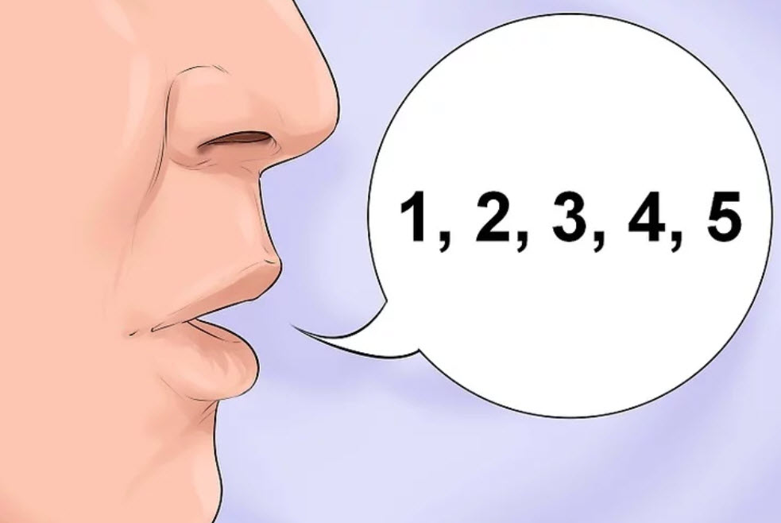
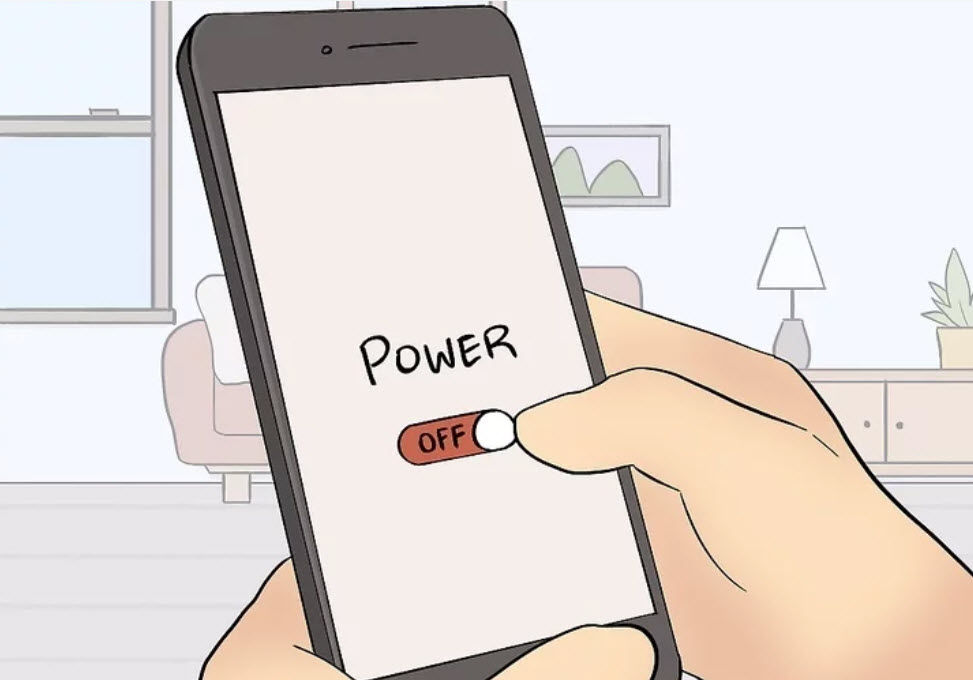
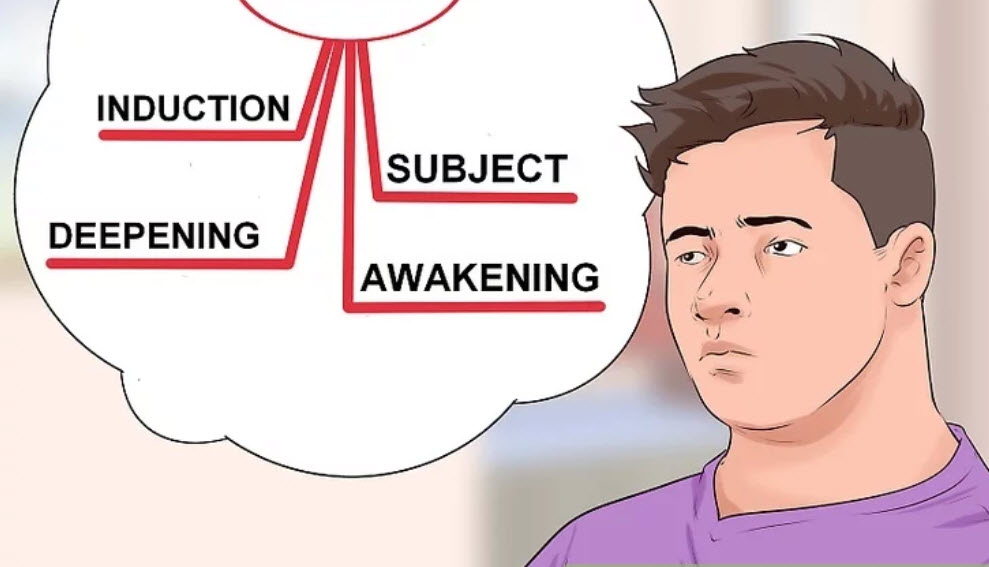
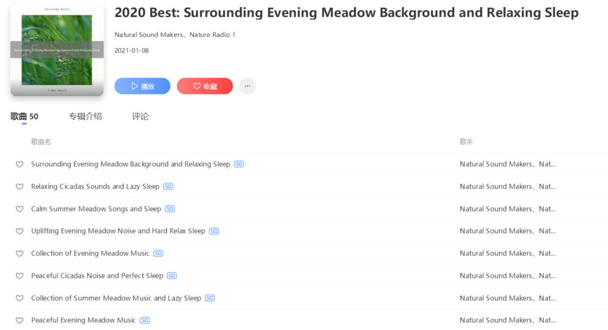
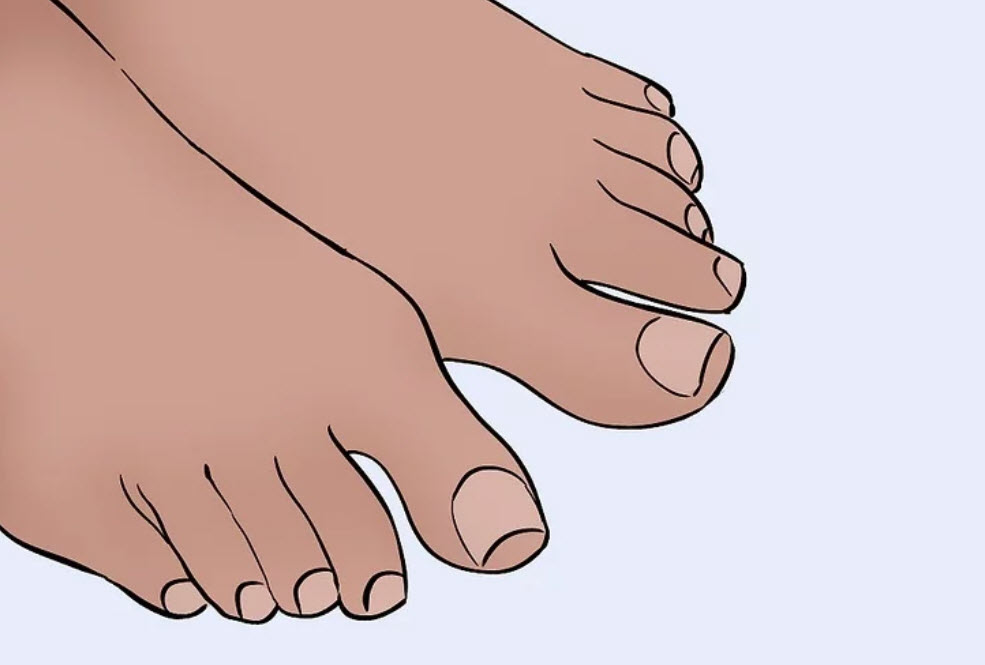
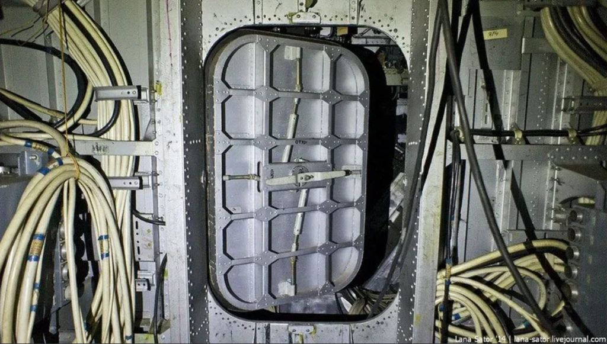

Here we are going to discuss a technique regarding prayer / affirmation campaigns.
This technique not only helps you conduct a prayer / affirmation campaign, but relaxes the mind, soothes the soul, and generally helps the body and mind interact together.
We live in a world that is perpetually bombarding us with noise and discord. From the neighbor that is mowing his lawn, to the television commercial that is screaming “Call now! It’s only 9.99!” and that “news” report that says that the world is going to be a “better and safer” place now that the US Navy is sending a naval carrier group to Taiwan. Just a few bombs. What could go wrong?
We need to turn off all that noise if we are to be able to focus on our life and our navigation through the MWI.
This is a post on something that I have used before. It is very helpful in cleaning out the “junk” that tends to clutter up our minds and which works to distract from our affirmation objectives.
This technique uses the technique of self-hypnosis to allow you to focus your thoughts and “clear the path” so that the affirmations can manifest. And it is a very critical and important technique for people that have brains that just won’t shut off. Or brains that constantly repeat endless negative narratives and thoughts that bombard our senses and render our affirmation prayers moot.
Remember…
This technique is very helpful to those of us that desperately need some peace and quiet and calm to focus. If you find yourself longing to go on long drives for some solitude, walks, a lonely breakfast alone, or that has screaming children about, this technique will really help you out.
It has helped me.
Depending on my personal situation, I tend to use it for a spell and then switch to another system, or just take a vacation from everything. But using this system is easy and also allows you to relax during the affirmation campaign as well as have a much longer campaign as it is often rather easy to incorporate into your lifestyle.
It’s called self-hypnosis.
What is self hypnosis in regards to affirmation / prayer campaigns?
Self-hypnosis involves becoming highly focused and absorbed in a self-generated state of receptivity.
- You relax yourself.
- Being relaxed it is easy to focus.
- You focus on getting more relaxed.
- When you reach a state of peace, you listen to your affirmations.
- Then you finish and return to normal.
This state is one that consists of a calm relaxed mind, a steady and calm body, and an audio tape that narrates your affirmation / prayer campaign to you.
The entire process lasts from fifteen minute to up to three hours depending on the person, and the campaign that they are engaged in. Mine have been from twenty minutes to forty five minutes in duration.
In general, self-hypnosis is an individual practice. It is quite unlike when you are working with a therapist. And since you alone control the affirmation dialog, you can be quite frank and open with your campaign programming.
The advantages of this technique is that it is very helpful in quieting the mind from extemporaneous thoughts, external noises and the day-to-day worries and fears that all of us have. And in so clearing away this debris, if offer a very stable and robust method for conducting an affirmation / prayer campaign.
Additionally, it can be a most empowering practice. You will learn to have better control of your thoughts and reactions to outside influences, as well as enjoying the physical and emotional benefits of the relaxation that is so very typical of self-hypnosis techniques.
An important aspect – undoing the programming of others
I have a problem: Fatalistic, negative thinking about myself. Almost every morning I wake up & think, “I hate myself.” Automatic, reflexive negative thoughts about myself persist all day long, thoughts such as, “Stupid”, “Dummy”, “Idiot” etc. Sometimes I think about ending my life just so I won’t have to listen to these thoughts. After a lifetime of disappointment & precarious finances, I have miraculously ended up in a fortunate situation due to a 3rd marriage: No debt; mortgage free “nice” house in safe neighborhood; retired with financial security; physical health; husband who tells me every day he loves me. Despite my fortunate external circumstances, my inner world is full of depression, fear, constant dissatisfaction and a sense of meaninglessness, purposelessness, disconnectedness & self-depreciation. And then I beat myself up because I’m not grateful for my good circumstances. -A Texan
Today, we like in a world where everything is trying to reprogram our mind; our brains. And that is what is. Our brain is a housing or a computer that runs a program.
We all know, if you are a regular reader to MM that the American (and Western) “news” outlets do not inform. They manipulate. They are constantly trying to herd humans and the human citizenry into actions from one extreme to the other.
“The problem is bias. While ideally the media should be objective and hold power to account, in reality we know that most news outlets are partisan and have their own agenda to advance. Whether state-owned or run by some shady tax-avoiding billionaire, getting ‘the masses’ to view the world from a certain perspective has always been a priceless power to wield.” One could say stagnation has led to people seeing the routine, consistent tricks played by the powers that be wielding the media, for what they are. It’s been like a stagnant, constant period of time unfortunately since the beginning of events in the early 2000’s, when the media has been promoting nonstop “national defense.” People know more about how the media is today, because it’s been the same, stagnant program for decades and decades now. It can be quantified with studies and statistics, or it can be understood in detail in one person’s own intuition and personal understanding. -Education Inspire Change
But this programming has always been part of us. From our earliest days, our earliest programs were embedded into our brains from childhood. those bully and fake-friends, and even teachers all contributed to fill your mind with nonsense. And it stays with us all these years.
These taunts, these screams, these snide remarks haunt us and lie there dormant inside our brains. Our reactions to life then are tainted and manipulated by these hidden programmed actions.
Whether by childhood bullies, or media manipulations, or evil government officials. You need to deprogram yourself. You need to run an anti-virus program.
Using Self-hypnosis you are able not only to run and conduct an affirmation / prayer campaign, but you are able to set that campaign to run as a program in your brain. You can also use this technique to root out the bad programs; whether it is from childhood bullies, or bad experiences. You must run the anti-virus program of self-hypnosis to purge your system of malware.
What can a person accomplish with self hypnosis when running an intention campaign?
What can humans accomplish if they’re in the “right” frame of mind? You can accomplish anything, and if your desire is to maintain your prayer / affirmation goals then you can expect them to manifest earlier than they might otherwise manifest.
When people are focused and motivated to accomplish a goal, and most effectively use their abilities, they are at the peak of their personal power. This is even more so with an intention campaign for the entire purpose of intention prayers is to direct life goals for your consciousness to follow and obey.
Typically, people use self-hypnosis to learn new skills more easily, perform athletic feats, be more creative, tolerate pain, and to face the unknown with greater confidence. These are just a few of the infinite examples of the value of self-hypnosis. And it has a long and successful history of helping people all over the world to better themselves, increase confidence and mental agility, as well as to be able to control or augment, their natural biological body processes.
The primary advantage in using self-hypnosis in a prayer campaign is to directly program your brain to what you want it to do and how you want it to think. While in the same process, purging the brain from negative, and counter-productive routines, beliefs and negative reinforcements that run counter to your desires.
- Stop the brain from running negative programs.
- Purge the brain of the negative programming.
- Reprogram the brain with positive programs.
- Run and conduct your prayer affirmations.
- Synchronize your body and mind to operate effectively together.
Self-hypnosis is a means of learning to focus yourself, motivate yourself, be more self-aware, and make the best use of your innate skills.
If you think about it, when you see other people do amazing things, they’re usually intensely focused on what they’re doing and what they’re trying to accomplish. Self-hypnosis is all about developing and using your focus in a goal-directed fashion.
And what is more goal-directed than an affirmation / prayer campaign?
Does self-hypnosis work?
Yes. It absolutely does.
This fact is well established from the days of when hypnosis was used by doctors to perform surgery and operations on patients. In those days, there were often opportunities where doctors and patients preferred to forego medicine and instead opted to go under a deep hypnotic trance.
Since the early 1800s, hypnosis has been used for medical and dental purposes, primarily to relieve pain and to replace or supplement anesthesia during surgery. At that time, it was called “mesmerism,” after the German physician Franz Anton Mesmer, who was the first to advocate the use of the process in pain control in the late 1700s. The medical literature offers a myriad of examples where hypnosis by another person has been successful in reducing or eliminating pain felt by the patient: in children undergoing chemotherapy; in women during labor and childbirth; in habitual smokers who wish to stop smoking; in the treatment of chronic tension headache, bedwetting, and tinnitus (constant ringing in the ears); and even in cases where breasts or limbs have had to be surgically removed, and hypnosis was the only anesthesia used! -What is self hypnosis?
While it is no longer commonly used in the medical profession to conduct surgery, it is still used to handle a host of other mental and emotional problems and conditions. You can use self-hypnosis to enter into deep states of calmness and receptivity.
...a hypnotic process is underway any time a person’s attention is focused and possibilities are offered for their consideration. “Let your body relax totally, from head to toe” “You will awaken feeling alert and fully rested.” “Picture in your mind the most relaxed, peaceful place you could imagine.” “Imagine you can hear your beloved grandmother’s voice.” If your attention is focused on any of these suggestions, the phenomena of hypnosis tend to ensue. You enter a light “trance” state. If this is done over a longer period of time, say 10 minutes, you will tend to go to a deeper level, especially if gentle music is playing in the background. And if you are listening to a talented storyteller, you can go even deeper, since you don’t have to know what suggestions to use next. The more experienced the storyteller, the more deeply you can go into the experience. -What is self-hypnosis.
Is self hypnosis the same as meditation?
No. It is not.
Self-hypnosis is very similar to meditation in that both involve entering a calm and relaxed state. The main difference is that when people practice self-hypnosis, they tend to have a specific goal in mind, something that will improve them and their quality of life in some way.
- Meditation vs. Self Hypnosis – Are They the Same Thing?
- The Difference Between Meditation And Self-Hypnosis
- Self-Hypnosis vs Meditation – Which is better? – Guided ..
- Meditation Vs Hypnosis: Key Differences & Similarities …
- Self Hypnosis VS Meditation – Self Hypnosis Talk
- 7 Differences & Similarities Between Hypnosis & Meditation …
- Meditation Vs Hypnosis: What are the Differences between …
- Are mindfulness meditation and self-hypnosis the same or …
However, in a typical meditation practice there is no particular goal, just an easy acceptance of wherever the mind goes without judgment or intention. It doesn’t or isn’t intended to be anything more / other than unifying your body and mind towards a best unity of the two.
Both meditation and self-hypnosis have the potential to promote physical and mental health in parallel ways, thus highlighting the merits of learning to develop and use focus meaningfully.
Using the computer analogy…
- Meditation is the same as purging your cache memory so the computer runs smoother.
- Self-Hypnosis is running programs in your computer. Using programs to remove malware, and installing new novel programs so it can perform new tasks.
Self-Hypnosis by-passes the “normal” sensory input mechanisms
By using self-hypnosis you are able to by-pass the “normal” routes that feed sensory inputs into your brain. You can block some stimuli. And you can add other stimuli at will. For you are in control.
Self-hypnosis programs can be used to help you change from one state of mind, or from one mood, to another. Each mood is a kind of mini-hypnotic (or hypnoidal) state. Thus there is actually no specific state that can be called truly “not hypnotic” – unless it is pure enlightenment! For instance, imagine there’s a day when you’re feeling great, and then suddenly get really bad news: a call comes in that your stocks crashed and your life savings have just gone up in smoke. That news changes your mood, your thoughts, and what you say and do. Next, imagine that an hour later you get another phone call informing you that the previous one was in error, that the truth is that you have just won the lottery. Presumably, there is a dramatic change in how you feel – for the better. Actually, nothing has really happened to you physically except that on both occasions, your mental image of yourself and the world changed. If a person in a receptive trance state is told they have touched poison ivy, they can break out in a rash; if told they are naked outside on a snowy day, they shiver; if told there is an open bottle of ammonia, they can smell it. This is due to the fact that there is a direct line between the images you have in your mind and your body – hypnotic techniques simply help you use this connection to improve your life. Of course, the kinds of suggestions offered during hypnotherapy, or that you give yourself while listening to a guided imagery audio experience, are designed to enable you to heal more rapidly, manage stress, improve your performance, change your behavior patterns, and become the person you most want to be. -What is self-hypnosis.
In computer language, the sensory inputs are known as I/O. Or Input / Output. They consists of the monitor, the mouse, the keyboard, the printer, a WiFi hookup or modem (if you are really old). The use of Self-hypnosis permits you to decide which I/O to connect and which to disconnect.
- You can change your I/O. Disconnect from the “news”, focus on friends and family.
- You can improve your connection speed. You can improve your receptivity to certain things or ideas.
- You can root out your memory. You can completely remove old programs, and all the storage space that they occupy.
- You can add new devices. You can program yourself to be more aware, improve ESP capability, memory efficiency, or listen for specific “signposts”.
Timing concerns
You want to create a taped or recorded narrative that describes your intention / prayer campaign PLUS the exercise necessary to conduct Self-hypnosis. This means that the time that you will need (or typically need) to read your personal affirmations will now be larger by the addition of perhaps from 20 minutes to an hour of self-hypnosis dialog. So you need to plan how the script will work and read when you are using it.
How often?
You should conduct this exercise at least once a week. However, when I ran the affirmation / prayer campaigns I did it every day (time and conditions permitting). It depends on your situation.
You need to make a recording.
You need to make an audio recording. There is no way that you will be able to memorize any of this.
This system and sessions ONLY work if you make an audio recording, and the self-hypnosis occurs when you are lying down and listening to it.
How to hypnotize yourself and run a prayer / intention campaign
Below are commonly employed steps to perform self-hypnosis. Hypnosis is perfectly safe, and you will be in control the whole time. After all, it is your experience. You are in control. At no time are you out of control. You are just calmer and more relaxed than what you could consider to be “normal”.

[1] Find a comfortable place
Find a place to perform the self-hypnosis. I used to use my RV Class”A” motor-home, my bedroom, or my den / study. I would also do it in my car during lunchtime.
Close the door.
Make sure that others know not to disturb you.
Make sure you feel physically comfortable as this will help you relax. Many people recommend that you sit in a soft chair with your legs and feet uncrossed. I used to do this. But over time, I have taken an alternative position. You may lie down. And that is my primary and preferred method. Though for newbies, this method may lead you to simply fall sleep.
Loosen any tight clothing and avoid eating large meals so you don’t feel bloated and uncomfortable. Ensure you will not be interrupted for 20-30 minutes during the hypnosis. Wear comfortable clothing if possible.
I know that this is not always possible. But if you can, just wear clothing that is not binding. Don’t wear a tie. Make sure that your boots are not gathered at your ankles (such as is the fashion).
When I would perform this activity, I would tend to do it in the afternoon. Perhaps 2 to 4 pm, in a quiet place where I know that no one would disturb me. (Usually, at these times I was unemployed. Floating on a Per Diem lifestyle.) All cell phones, and distractions are turned off. I usually have a drink of water before the session, and I personally lie down with a light throw-blanket over my chest. (If you go into a deep hypnosis, your body temperature will decrease a few degrees.)
I have a tape recording (I used to use a cassette, but now it is very easy to use your smart phone instead.) with me listening to me reading my prepared script narrative. (See sections [2 and 3] next.)
I rest and put either my head phones or ear buds in and make sure that I am very comfortable. I used to have a set of noise cancelling headphones that were wonderful, but today I just simply use ear buds, and as long at they don’t slip out of your ears, they work just fine.
If you have a problem with the ear buds falling out, put on a “watch cap” or some other tight fitting hat to hold them in your ears. I never noticed any discomfort in wearing headphones or a watch cap with ear-phones, but everyone is different. Find out what works for you.
I personally prefer to have my shoes off, and just lie there in bed with my socks on. I also typically have my cassette player / smart phone near my head about 25 cm away (one foot). I also make sure that the phone is off (do not disturb setting) so that I will not be rudely awakened by someone calling.
Children, pets, spouse, friends, and everyone else is left outside the room. This is a time of solitude and privacy. My one exception has always been some of my favorite cats. But they knew the ritual and would never disturb me while I was in the self-hypnosis dive.

[2] Generate a script narrative.
Once you are settled in place, you turn on the script that you prepared. This is a script that you have read into your recording device.
This script consists of four parts. Which are…
- Calming introduction and relaxation session. (Induction.)
- Walk down to a receptive state & arrival. (Deepening.)
- Read the affirmations. (The “Subject”.)
- Closure and wake up. Exit. (Awake.)
Other people give these four stages different names. But the process remains the same.

[2a] Calming Introduction
You start off the “tape” or recording with about ten minutes of soothing music. this is known as “Induction”.
You play from 5 to 15 minutes of calming music.
Find some music that you find relaxing and soothing. You can find tons of this type and style of music on the internet or in your favorite music APP. Just look for any of the following keywords…
- Ambiance
- Trance
- Tranquil
- Soothing
- Mellow
And search until you find something appropriate. For the longest time I would use sounds of nature to begin a session. I used sounds of thunder at night, evening rain, gentle breeze, and horse sleigh ride at night. Just find one that fits your mood and put that at the beginning of your taped session.
Start with a low volume and calm pace.

Some people used Hemi-Sync. You can do this as well, but I really prefer the sounds of nature myself. Hemi-Sync is perfect for longer periods of contemplation. It is a complete package. But that is not exactly what we are looking for here. We want something that can be used WITH our affirmation / prayer campaigns.
I do however recommend it for calming and contemplative activities.
Hemi Sync: Official website for binaural music | Hemi-Sync.comHomeHemi-Sync.com® is home to the largest online collection of content to help you relax, focus, meditate, sleep and lead a more vibrant life.
The idea is to start the tape with some relaxing sounds. Figure at least five minutes, and no more than fifteen minutes of music. The purpose of this is to slow down your body and the mind using the music. It serves as a curtain that you close to allow yourself some privacy from the screeching and howling of the rest of the world outside.
[2B] Walk down to a receptive state.
Here you start to enter a meditative / receptive state. This is not automatic. Just being relaxed is not the same as being receptive. You need to “trick” your mind to go into a deep trance. This is done using visualization techniques.
This is the “induction script”.
There are many techniques that you can use. Many use the “progressive muscle relaxation technique”. However, I believe that you should use a two-step process in addition to it. Thus this discussion will consist of two parts.
- [2B-1] Muscle relaxation. (Relax the body.)
- [2B-2] Walk down the stairs. (Enter a state of receptiveness.)
[2B-1] The progressive muscle relaxation technique
Enter the hypnotic state with a common technique known as progressive muscle relaxation. With this, focus awareness upon any tension stored in parts of the body, and release tension sequentially. Begin with your hands and arms, then move down to your back, shoulders and neck, then stomach and chest and legs and feet. Visualize the tension dissolving or evaporating away, or slowly tense then relax the muscles.
The feeling of deep, pleasant, comfortable relaxation is an excellent starting point to begin self-hypnosis.
If you wish to use this technique, you need to narrate it in your recording. you need to tell yourself to relax your body, and then go through the various parts in great detail.
- Search for areas of tension in your body.
- Locate the areas and direct yourself to sooth away the tension from those areas.
Once done you can begin to relax the rest of your body.
- Then go to your hands.
- To your fingers.
- Then your shoulders and neck. Spend time here.
- Then your arms.
- Then your chest.
- Moving downward to your stomach.
- To your legs.
- To your feet.
- To your toes.

[2B-2] The Walk Down The Stairs Technique
You need the recording to play the calming music and then go into the walk-down sequence. You just lie there and listen. The recording will take you deeper and deeper into a trance. Then when you are in that trance your affirmations can be read to you. And you will hear them with great clarity.
This is the technique that I use.
This is also the technique that was taught by Doctor Newton. (Journey of Souls).
[Begin the kind of narrative that you want to read to yourself. You can add to it. I do not suggest deleting from it. Alter and change it to fit your personal personality.]
In this technique, you listen to a narrative that you generate. In it you describe a big door standing in front of you. You describe the details of that door. You describe the heavy timbers, the age, the huge size, and the ancient knockers and hinges on it. You also describe that it is locked with a large padlock and you describe this padlock. You describe the size and the weight of this heavy metal ancient padlock.
You then describe a heavy old fashioned key that you are holding in your hand. You discuss how you use that key to open the padlock and how it feels to turn the key in that old rusty lock. You then describe the heavy old chains falling away and that you push open the door and you enter a dimly lit stone room. That no one has been in the room for many years. And that you walk forward into that room.
You then describe walking down into the dark room, and then at the end of the room is a stone alcove. You head towards the alcove. It is a carved alcove with an ornate edge and a small dusty statue of a gargoyle at the top of it, and peering inside you see steps leading down.
So you describe the steps. The steps are dusty and unused. But you can see that there are a few foot prints in the dust, and each time that you put your foot on a step that you will go into a much deeper state of relaxation and receptiveness to the narrative that you are reading. Each step takes you down lower and lower to a much more receptive and relaxed state.
You go down two steps. You feel very relaxed and much more receptive.
You go down two more steps. You are much more relaxed, and much more receptive.
You do gown tow more steps. More relaxed. More receptive.
You go down another two steps. Very relaxed and much more receptive.
You go down another two steps and you find yourself on a flat platform. It is dim, but the platform is lit by an old brass lamp. You have now gone down ten steps. You reach out and move the brass lamp from it’s nook in the side of the stone wall. It moves and displaces some dust in the process. It has a handle at the top, and it is very, very dim. So you see a small knob and you slowly turn the knob and the brass lamp give off a greater amount of light. And you can see the little stone platform that you are standing upon.
You see that there is another flight of steps, so you start walking down the steps into the darkness. Each step, like before takes you deeper into a more restful and receptive state. You put your foot on the first step, and you notice the solid dusty coldness. Then you take another step.
Each step takes you deeper down. Each step is a more relaxed state. Each step makes you more receptive. You also find yourself calmer with each step and more peaceful. For each step is like a smooth movement in the cool darkness.
You go down two steps. You feel very relaxed and much more receptive. You are very calm.
You go down two more steps. You are much more relaxed, and much more receptive.
You do gown tow more steps. More relaxed. More receptive. And extremely calm.
You go down another two steps. Very relaxed and much more receptive.
You take another two steps and you arrive at a singular room with a large hole in the dusty stone floor. You set the lantern down and peer down into the darkness. It goes deep, really deep down. But there is a very strong and sturdy ladder to the side of that hole. You cannot see much as it is very dim, but ten flights below is another platform and there is huge brass gauge there sitting on a pedestal. You cannot see it clearly. So you start to climb down the ladder. You leave the brass lantern on the floor, and you start to climb down the ladder. Each rung is a great relaxation, and great improvement on your peace, your calmness, and your being.
You go down two rungs, and you feel so much more relaxed.
And another two rungs. And you are even more relaxed. You are so very relaxed now, but each run makes you even more relaxed.
You go down two more rungs.
You go down another two rungs, and are so very relaxed now, you feel like you are floating. And you reach the bottom platform. And there you see the big heavy bronze mechanism in front of you.
This mechanism is very old, very heavy, very intricate and very beautiful. It is some kind of gauge, and you can see the arm of the gauge pointing to a number written on the faded white parchment surface behind it. It is pointing to a number. You look closely at the number that it is pointing towards. You peer closely at the number the number is starting to get clear and it looks like the roman number six.
Then you look around the room.
There are alcoves set into the wall. It is like you are at the bottom of a deep, deep well. You look at the wall and there are many alcoves all set into the wall. Each alcove contains a hallway leading towards a darkness. You look up and find the alcove numbers. They are carved into the stone above the alcove entrances, and you look for the proper portal.
You see number one carved above the first alcove. It’s not what you want. It’s empty and covered in thick, ancient cobwebs.
Then, you go to the next alcove. You see a number two carved into the stone above the alcove. It too is not what you are looking for. It is not only covered in cobwebs but is barred a little ways in. There is what appears to be a barred metal gate inside. And it is old, rusty and very dark and dim.
Then you go to the alcove after that. You look at the entrance to the alcove and you see a number three.
That is not where you want to go. either. So you see the next alcove. Above it is carved the number four. It too is like the others. It is dim and dark and full of ancient cobweb.
Not where you want to go, so you go to the next alcove. You stop at it. You look at the fine ancient workmanship and you look at the very top of the alcove. And there at the top is the roman number five. It looks like the letter “V”. It is particularly dusty and damp. You feel a coldness and a dampness inside that opening.
That is not where you want to go.
So you go to the next alcove, and you study it. And this is the alcove you want. Not only is there a number six carved and chiseled into the stone, but the path through the alcove is clear and illuminated with small torches set inside tiny nooks in the stone wall. The torches are on metal frames that are set into the walls. They seems to burn brightly, and you can clearly make out the ancient meal straps and rivets of the torch holder.
And you start to walk down the hallway.
You walk forward.
The sound of your footsteps echo in the lonely corridor.
You walk further inside.
And as you walk things are getting clearer and easier to see and understand. You have clarity. You have perception and you are fully relaxed now.
And a few more steps further and you see that there is a big door in front of you. It is a nice, solid, heavy metal door made out of walnut, and it is just beautiful. And there is a handle, and you have a key in your hand. And you put that key in the keyhole and you grab that handle and you pull on the handle.
And the door opens.
The door opens to a warm and cozy room. This room looks different than anything else. It appears that you are inside a golden submarine. The walls are curved and nice shiny gold. There are nice braces and supports that are ribbed and that go to floor to ceiling in these large circular curved arches. Inside these braces are holes like cutouts. And the entire inside looks like some kind of Victorian era interior decoration. There are big plush chairs and sofas all made out of rich leather. The inlays on these chairs are beautiful and exquisite.
The walls have these deep red velvet curtains with gold tassels that drape over the walls. They are held in place by metal hooks that are exquisite and wrought with the images of lions, and other animals of the deepest Victorian Africa.
There are windows and you can look out of the windows and see a beautiful ocean with colorful fish, corals and schools of glimmering tiny fish. You can see octopi, and starfish, and nice glowing jellyfish. There are big heavy fringed curtains that hang by the windows. They are lush with deep red patterns and gold inlays. They have gold tassels and weaved designs and hang on gold rods.
There is a painting of a pastoral scene on one of the walls. You can see the sheep and cows in the painting, and a nice woman in peasant attire from a century ago talking to a young man wearing working clothes and chewing on a stalk of wheat. He is leaning against a stone wall, and she is holding a basket with some wild flowers that she had picked. She seems to be in her teens, and he is only slightly older with a mischievous, but shy, grin.
There is also a big ornate clock on the wall. And on the clock is a hand that can go forward and backward in time, and a series of old fashioned knobs underneath it. These are porcelain knobs that resemble the kinds of knobs that you might find on an old bathtub. The knobs are labeled, and by turning the knobs you can change the time. You can go forward or backwards.
To the right of the clock is a big detailed calendar. It is thick and if you wanted to you could go back in time, many years, by turning the sheaf of pages.
And there is a big heavy chart table in the middle of the room. It has big, enormous sturdy legs. And a solid and steady table top. Above it is an old-fashioned Tiffany lamp with colored designs in the glass, and it all gives off a greenish glow. And on that chart table are papers, maps, books, leather bound journals, metal rulers, compasses and positioning equipment to include a sextant, and an old fashioned watch on a gold chain, and an empty coffee cup.
But on that table is a heavy leather book. It is huge. It’s covers are thick, and it has a title carved into the leather. The title of the book reads “Operation Manual and Orders” but it is locked with a book lock. The lock is golden and securely clamps the book shut with a leather strap.
But you have a small gold key in your hand.
You use that lock to open up the book.
The lock opens easily and your look into the pages of the book. Many of the written orders are old and very simple. You peer at them, and read some of them. They are very elementary. They say such things as “listen to your body”. “Be a good person.” And “take care of your self”. So you flip though some of the other pages.
Each page is thick and heavy, and is made out of parchment. You can feel the parchment when you turn the pages.
You see a page that contains a long description of a long poisonous memory from childhood. You carefully tear that page out. You can feel it tear out, and rip out of the book, but it is finally out. You crumple the paper. You crumple it in a ball.
Then you take a pack of old-fashioned wooden matches that are sitting on the table. You remove one wooden match. You see the red tip of the match and you strike it against the side of the box of matches and it lights into a small tiny flame. You put that flame to the crumpled ball of paper and you toss the lit paper into a big empty brass trash can that is at the foot of the large table. You watch it burn and flicker into grey dust in the golden can.
You go back to the book. And you continue to leaf through the pages.
And now you reach the latest entry in the book and it is a blank page.
You pick up a pen that is lying on the desk and you start writing in the book on the fine paper. You write…
[This part of the narrative ends and you can start reading your affirmation campaign.]
[3] Verbalize your Affirmation Campaign
In the focused and relaxed state of hypnosis, you can pay deeper and fuller attention to the suggestions you want to give yourself for self-improvement. These can be simple but clear statements you offer yourself about what you might do differently, or how you might react differently in some challenging situation, or how you might come to think differently about yourself or some circumstance.
These ‘post-hypnotic suggestions’ (meaning suggestions that can take effect after your self-hypnosis session is finished) can help you achieve your goals.
It is at this point that you read into your recorder the prayer / affirmation campaign narrative.
[4] Return to your usual level of alertness
Keep in mind that you will easily exit the trance state because your recorded dialog will instruct you to wake up easily and feel great and refreshed afterwards.
After providing the suggestions, You close the affirmation / prayer segment of the self-hypnosis exercise by adding this script…
You have finished writing into your command book. You put the pen down, and you slowly and carefully close the book. When the book is closed you pat the cover nicely, and then closed the hasp and book-lock that secures the book safely.
It is now time to leave and you move away from the table and turn around in the yellow room. You see an exit door at the back of the room. You walk towards it.

There is a placard on the door. You can’t make it out, but there are five sentences on the card. They are numbered. The first sentence begins with a number one. You read it.
- One you are becoming more alert & aware.
- Two, you are exiting the room, and existing the affirmation sequence.
- As you count to three, you are much more aware and awake.
- At four, you are calm, and clear and ready to fully awake normally.
- At the count of five, you can open your eyes and stretch out your arms and legs and go on with your day.
Tips for hypnotic suggestions
When making suggestions during self-hypnosis in step 3, follow these tips:
- Say it with conviction: Imagine the words being said gently but with conviction and ensure the tone is reassuring, confident and positive.
- Phrase suggestions in the present tense: The suggestion, ‘I am confident’ will be more effective than, ‘I will be confident’ as the word ‘am’ is in the present tense and is more certain.
- Make suggestions positive: For example, ‘I am at peace’ is better than ‘I am not stressed’ ; talk to yourself about what you do want, not what you don’t want.
- Make suggestions realistic: Avoid over-ambitious suggestions such as, ‘I will lose a lot of weight quickly’. Instead focus on smaller and more specific goals such as, ‘I will eat more vegetables, and exercise more’.
- Repeat the suggestions: State the suggestions many times during the hypnosis. Repetition of an idea can help drive home the point.
Tips for improving self hypnosis:
- Have a goal in mind: Before starting self-hypnosis ensure to have a goal in mind, such as lowering stress. This will ensure each session is focused and productive.
- Schedule time for self-hypnosis: The hardest part of self-hypnosis can be getting started. It may work best to set aside a time each day for self-hypnosis and write it in your schedule. Self-hypnosis can be performed during the day, or at night before you sleep.
- Keep up the practice: Like riding a bike, it takes time to learn self-hypnosis. With practice and instruction, you will learn to more quickly enter a state of trance. You will also learn a broader range of hypnotic suggestions to improve the outcome.
- Use a mobile app: Mobile apps such as Mindset (for sleep & mental health) and Nerva (for IBS) can be a great way to get the best of both self-hypnosis and hypnosis with a hypnotherapist.